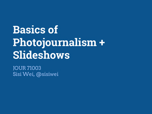
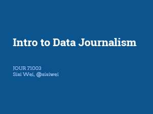
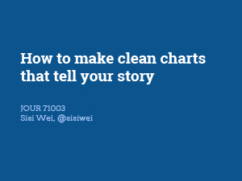
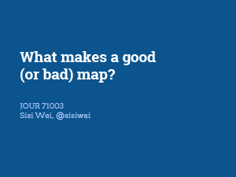

Storytelling with Data + Interactivity
CUNY J-SCHOOL | Thurs. 2-5:50 p.m. | Room 442 | Sisi Wei See the code on Github
 Wind map of Hurricane Sandy by Hint.fm
Wind map of Hurricane Sandy by Hint.fm
The Data/Interactivity 10-week portion of this course introduces students to the essential concepts, tools, and story forms in multimedia storytelling. Students learn the basics of HTML/CSS/JavaScript, leverage existing frameworks and libraries (Bootstrap, jQuery), and pitch, report, produce, and critique interactive, media-rich news packages.
The course covers four common multimedia story forms (slideshows, charts, maps, and quizzes), which allow students to explore the different narrative potential of each, and to delve into data, coding, design, and interactivity. This module covers fundamental technical skills that will serve as the foundation for your interactive work at the CUNY Graduate School of Journalism.
Week 1 | Oct. 9
Knowing Enough About the Internet to be Dangerous
 XKCD #722: Computer Problems
XKCD #722: Computer Problems
Lecture & Discussion
- Introductions, syllabus overview and expectations for the course
- Anything is possible
- What coding (or programming) means, how it's used, how it's useful for journalists
- How a website works
- How to use slideshows to tell a narrative, looking at some examples
Hands-on Workshop & Lab
- Create a simple website from beginning to end
- Uploading our site to the server via FTP
- This week's Codepen
Homework
- Come up with Slideshow pitches and email them to me before class. Be ready to present on them during class.
- Read Scooped by Code, by Scott Klein
Week 2 | Oct. 16
Slideshows
Lecture & Discussion
-
What to think about when taking photos & how to write a good caption

Hands-on Workshop & Lab
- Photoshop basics: pixels, 72 dots per inch, resizing, cropping, file formats
- Photography exercise with origami
- Use javascript libraries on our site, like Twitter Bootstrap
- Create your own interactive slideshow using jQuery and this Bootstrap Carousel template
- This week's Bootstrap/Carousel code
Homework
- Begin reporting out your Slideshow stories
- Read Chapter 1 of Philip Meyers "The New Precision Journalism"
- Read Become Data Literate in 3 Simple Steps
Week 3 | Oct. 23, 3 - 6:50 p.m.
Intro to Data Journalism
Lecture & Discussion
- How else can you use static images? Juxtapose them.
- What is data journalism? Discussion of Meyers.
-
What is interesting about data, how to make data meaningful, how to chart those meanings
 - Expectations for Chart story pitches
- Two Codepens from this week: One and Two
Hands-on Workshop & Lab
- Inspect Element, CSS Classes
- Work on Slideshows
Homework
- Complete Slideshows for next week. Have your final versions uploaded to the FTP server and linked to from your homepage. Email me the link to your homepage. Due before class begins next week. See requirements below.
- Come up with Chart story pitches and email them to me before class. Be ready to present on them during class.
- Read Finding External Data from Data + Design. Skip the last section about how to give credit. We'll cover that separately.
Slideshow Assignment Requirements
- The slideshow should be 6-10 photos. If it’s more or less, there should be a good reason.
- Captions should be between 20 to 100 words each.
-
Technical functionality
Does the slideshow actually work? If I click on a button, does the picture move onto the next one? Does a new caption show up too? -
How well do the photos take into account the concepts we talked about in class?
Ex: Lighting, establishing shots, cropping - Do the captions and photos tell an engaging story? Would a reader care?
- Accuracy of all content
- Proper crediting of all content
Week 4 | Oct. 30
Charting, Numeracy, and Data
Lecture & Discussion
- Data visualization as clarity and insight
- Basic types of charts and how they're used
-
Data can be misleading and confusing
Hands-on Workshop & Lab
- Spreadsheet basics: sorting, simple functions, pivot tables
- Chart pitch workshopping
Homework
- Begin working on your Charts story
Week 5 | Nov. 3, 1 - 4:30 p.m. | Room 330
Visualizing Data
Lecture & Discussion
-
How to make clean charts that tell your story
 -
Introduction to what makes a good Mapping story

Hands-on Workshop & Lab
- Creating charts from Google Spreadsheets
- Using HighCharts
- Using Mr. Data Converter
- Work on Charts story
Homework
- Complete Charts for next week. Have your final versions uploaded to the FTP server and email me the URL. Due Nov. 13th at midnight. See requirements below.
- Come up with Maps story pitches and email them to me before class. Be ready to present on them during class.
- Sign up for a CartoDB free academic account. Use this link specifically, it'll get you a better account than their default free one.
- Read Matt Ericson's When Maps Shouldn't Be Maps
Chart Assignment Requirements
- Headlines and deks for two charts. Deks should be between 50 and 150 words. (If the charts tell one story together, you can write one headline and dek for both.)
- Do the chart forms (ex: line v. bar) make sense for the data?
-
Technical functionality
Do interactive parts (if any) work? Are the charts completely drawn? Is anything missing? - Content - is there a clear takeway message from each of the charts? Are the charts labeled correctly and well enough?
- Accuracy of all content, including whether the data supports your story
-
Properly sourcing your data. For example:
Source: Bureau of Labor Statistics - Email me the original data you used
Week 6 | Nov. 13
Maps
 XKCD #1138: Heatmap
XKCD #1138: Heatmap
Lecture & Discussion
- Discuss reading
- CartoDB vs. ProPublica Landline/Stateline
Hands-on Workshop & Lab
- Link Exercise
- Chart story worktime
- Creating a map with ProPublica Landline/Stateline
- Map pitches workshop
Homework
- Finish Chart story and Map pitches by tonight at midnight. Remember to email me the Chart story URL, otherwise it doesn't count as being turned in.
- Begin working on your Maps story
Week 7 | Nov. 20
Maps Lab
Lecture & Discussion
- Other spatial storytelling frameworks: storymap.js, odyssey.js
- Introduction to News Games, Quizzes
Hands-on Workshop & Lab
- Work on Maps story
Homework
- Complete Maps for next week. Have your final versions uploaded to the FTP server and email me the URL. Due before class begins next week.
- Come up with Quiz story pitches and email them to me before class. Be ready to present on them during class.
Week 8 | Dec. 4
Quizzes
Lecture & Discussion
- Quiz examples
Hands-on Workshop & Lab
- Quiz pitches workshop
Homework
- Begin working on your Quiz story
Week 9 | Dec. 11
Quiz Lab
Hands-on Workshop & Lab
- Make a sample quiz using Mother Jones' NewsQuiz template
Homework
- Complete the Quiz story for next week. Have your final versions uploaded to the FTP server and email me the URL. Due before class begins next week. Be prepared to discuss in class.
Week 10 | Dec. 18
Onwards
Lecture & Discussion
- Group critiques
- Wrapup
- What's next
Policies
Software Requirements & Accounts
Before our first class, please come with programs below already installed on your computer. We will be using many of them during our first class. All of them are free.
Syllabus Outline
Grading
Your grade in this 10-week portion of the course is determined by two factors:
- Participation (20%)
- Successful, on-time completion of four interactive stories (80% total, 20% each)
Participation includes attending all classes and being punctual, being active in discussions of the reading material, workshops and critiques, and participating in all in-class activities.
Grades for your interactive stories are broken down as: Pitch (20%), Final (80%). You are required to pitch, report, and produce a story for each of the forms. Your course grade depends on successfully meeting the requirements for each story and meeting all deadlines.
Late Penalty: Assignments that are turned in late will be deduced one full letter grade per day. Ex: an assignment turned in one day late earns an A, but is reduced to a B.
Pitching
A complete pitch should tell us who cares, why we care now, and what pre-reporting you’ve done. You must include:
- A proposed headline
- Why a reader should care (a news hook or explanation of why the story matters now)
- Nut graf capturing the essence of the story (1-2 sentences)
- Description and link to potential sources (database, character, or expert contact)
Story Requirements
Remember: Headlines and captions are part of your story. Work is not complete without them.
- Slideshow
Your slideshow should include six to ten different images with captions and a headline. Each caption should be 20 to 100 words. - Chart
You will create two charts that use data with news interest. The charts must include a headline and caption that direct readers to a clear takeaway. Your caption should be between 50 and 150 words. - Map
Your map can be a map of points or shapes, but should include a clear, thoughtful title and a caption. Your caption should be between 50 and 150 words. - Quiz
Your quiz should include four to six questions with two to four possible answers each that provide explanatory feedback for both incorrect and correct answers.
Your work for this class should be your own original reporting. However, if you've done reporting for another class that you'd like to expand on in an interactive project, we encourage you to return to stories you know well.
Plagiarism and Copyright
It is a serious ethical violation to take any material created by another person and represent it as your own original work. Any such plagiarism will result in serious disciplinary action, possibly including dismissal from the CUNY J-School. Plagiarism may involve copying text from a book or magazine without attributing the source, or lifting words, code, photographs, videos, or other materials from the Internet and attempting to pass them off as your own. Please ask the instructor if you have any questions about how to distinguish between acceptable research and plagiarism.
In addition to being a serious academic issue, copyright is a serious legal issue.
Never "lift" or "borrow" or "appropriate" or "repurpose" graphics, audio, or code without both permission and attribution. This guidance applies to scripts, audio, video clips, programs, photos, drawings, and other images, and it includes images found online and in books.
Create your own graphics, seek out images that are in the public domain or shared via a creative commons license that allows derivative works, or use images from the AP Photo Bank or which the school has obtained licensing.
If you’re repurposing code, be sure to keep the original licensing intact. If you’re not sure how to credit code, ask.
The exception to this rule is fair use: if your story is about the image itself, it is often acceptable to reproduce the image. If you want to better understand fair use, the Citizen Media Law Project is an excellent resource.
When in doubt: ask.
Syllabus Changes
I'll be evaluating the pace of the class as we go, so this syllabus will be constantly updated and changed.
Contact
Feel free to e-mail me anytime with questions you have about assignments, your progress, or if you're just lost and need help. I'll my best to respond quickly.
Office Hours will be by appointment only, however I'm happy to stick around after class ends to help anyone who needs it. Since I work for ProPublica during the day, it'll be hard for me to get to CUNY in-person outside of class. However, I'm more than happy to setup Skype or Google Hangout appointments.